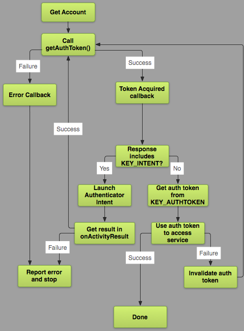

Android
Corso Avanzato
Andrea Tortorella
Tematiche
- Ui avanzate
- Context awareness
- Invadere la home screen/Push notifications
- Cloud/Server Syncing
UI Avanzate
UI expectations
Nessun utente del vostro servizio valuterà mai la vostra app per come è bello il vostro codice
La complessità delle UI mobile cresce di anno in anno
Imarare la lingua dei designer
Tradurre un design in codice, mantenendone l'usabilità/programmabilità e le performance
UI expectations
- I pattern comuni della UI/DataBinding
- Usare i componenti standard
- Compound views
- Custom widgets
Databinding
- Supporto al two way databinding in modo efficiente
- Permette di aggiungere logica ai file di layout
- Code generation
android {
dataBinding {
enabled = true
}
}Componenti standard
- Toolbar e CoordinatorLayout
- NavigationDrawer (navigazione)
- Tabs e ViewPager (navigazione)
L'interno di View
- Calcolare le dimensioni
- Disporre i componenti sullo schermo
- Disegnare se stessa e i sotto componenti
- Salvare e ripristinare il proprio stato
- Interpretare l'input utente
- Esporre proprietà accessibili dall'xml
public class CustomView extends View {
public CustomView(Context context, AttributeSet attrs, int defStyleAttr) {super(context, attrs, defStyleAttr);}
protected void onMeasure(int widthMeasureSpec, int heightMeasureSpec) { }
protected void onLayout(boolean changed, int left, int top, int right, int bottom) { }
protected void onDraw(Canvas canvas) { }
protected Parcelable onSaveInstanceState() { return super.onSaveInstanceState();}
protected void onRestoreInstanceState(Parcelable state) {super.onRestoreInstanceState(state);}
public boolean onTouchEvent(MotionEvent event) { return super.onTouchEvent(event); }
@Override
protected void onAttachedToWindow() {super.onAttachedToWindow();}
@Override
protected void onDetachedFromWindow() {super.onDetachedFromWindow();}
}Compound views
- Un insieme di widget che funzionano sempre in modo coordinato
- Difficilmente sono riutilizzabili fuori dalla specifica app
- Elevano il linguaggio della ui al modello applicativo
- Alternativa all'uso dei fragment
- Appiattire i layout
Merging in sub components/and exposing methods
- Una compound view parte sempre da un ViewGroup
- Espandere i componenti nel costruttore: tag merge
- Trovare i figli aggiunti dall'esterno in onFinishInflate
Esporre attributi
- Le view sono configurabili tramite attributi
- Possiamo dichiarare un gruppo di attributi con declare-styleable
- ... e recuperarne i valori tramite obtainStyledAttributes
Custom Widgets
- Ogni componente standard una volta era un custom widget
- Complessità estremamente variabile
- Più comuni di quanto ci si possa aspettare
- Danno unicità ala vostra applicazione
Misurare la view
- Nel metodo onMeasure dobbiamo calcolare le dimensioni della nostra view
- I constraint ci arrivano come parametri interi (MODE + SIZE)
- Mode: EXACTLY, AT_MOST, UNSPECIFIED
- Se la view contiene figli iterare e misurare i figli
- Comunicare la propria dimensione al sistema setMeasuredDimension
Disegnare sullo schermo
- Durante onDraw
- Se abbiamo bisogno di aggiornare il disegno invalidate()
- Canvas: la tela su cui disegnare
- Path: un tracciato da disegnare
- Paint: le informazioni sullo stile
- Obiettivo 16ms tra invalidate e fine del disegno. (es. mai allocare oggetti in onDraw)
Gestire gli eventi touch
- Quando l'utente tocca lo schermo, il metodo onTouchEvent viene chiamato molte volte
- MotionEvent contiene tutti i dati di interesse
- Il codice può diventare molto complicato. Sono disponibili numerosi helper: GestureDetector,VelocityTracker, ViewDragHelper,Scroller
Custom layout
- Fornire LayoutParams per comunicare con il parent
- onLayout dispone le view sullo schermo
- Gran parte del lavoro è già stato fatto da onMeasure.
- Possiamo usare LayoutParams per cachare informazioni
Animazioni
- Aggiungono vita alla nostra app
- Il movimento è uno strumento per guidare l'attenzione
- PropertyAnimations
- Drawable Animations (specialmente utili con vector drawables)
Context Awareness
- Molte informazioni possono essere dedotte senza richieste all'utente
- Dati provenienti dai sensori, o da una combinazione dei loro input
- L'uso reiterato delle funzioni, ci permette di imparare i comportamenti
- Usare informazioni non richieste esplicitamente può risultare invasivo
Android Permission Model
Alcune API/funzionalità, sono protette da uno più permessi. Un'app che voglia usare una di queste funzionalità, deve ricevere il consenso dall'utente
- Pre Marshmallow (API 23) modello di permessi statici. Per usare un'app bisogna acconsentire a tutti i permessi
- Da Marshmallow modello di permessi rinnovato. L'utente può accettare/rifiutare dinamicamente i permessi
Nel vecchio modello, un'app installata ha sempre tutti i permessi. Con il nuovo modello si deve gestire il caso in cui l'utente voglia usare solo parte della nostra App.
Permissions
- Ho bisogno di un permesso quando esco dalla sandbox dell'app
- Si possono creare permessi nuovi, anche associati alla firma
- I permessi appartengono a diversi livelli di protezione
- Solo i permessi dangerous richiedono autorizzazione a runtime
- I permessi sono divisi in gruppi. L'utente viene interpellato solo per il primo permesso richiesto di ogni gruppo
- Alcuni permessi implicano la presenza di specifiche features (che potrebbero non essere disponibili)
Richidere un permesso a runtime
//...
int grant = ContextCompat.checkSelfPermission(context,
Manifest.permission.ACCESS_FINE_LOCATION);
if(grant == PackageManger.PERMISSION_GRANTED) {
// ok proceed
} else {
// no permission. request asincronously
if(ActivityCompat.shouldShowRequestPermissionRationale(this,
Manifest.permission.ACCESS_FINE_LOCATION)){
// educate the user
} else {
ActivityCompat.requestPermissions(this,
new String[]{Manifest.permission.ACCESS_FINE_LOCATION},
REQUEST_CODE);
}
}Richidere un permesso a runtime
public void onRequestPermissionsResult(int code,String[] permissions,int[] grants){
// se permesso non garantito disabilitare la funzionalità, altrimenti procedere
}Chidere all'utente di riabilitare il permesso
Intent intent = new Intent(Settings.ACTION_APPLICATION_DETAILS_SETTINGS);
Uri uri = Uri.fromParts("package", context.getPackageName(), null);
intent.setData(uri);
// Start for result
startForResult(activityOrFragment, intent, REQUEST_CODE);Context Awareness: Geolocation
- Conoscere la posizione dell'utente
- Geocoding/Places
- Mappe
- Geofencing
Location APIS
- Il sistema di localizzazione si basa su una tecnica nota come Assisted GPS
- I dati provengono da diversi provider: GPS, ma anche wifi e cella telefonica
- Android LocationManager: api di sistema per accedere ai dati sulla posizione
- FusedLocationProvider: provider di localizzazione fornito come libreria esterna
Considerazioni importanti
- Ogni provider ha caratteristiche diverse, precisione, tempo di acquisizione del dato, dispendio energetico...
- Queste caratteristiche mutano a seconda di vari fattori ambientali
- Usare il LocationManager lascia l'intera responsabilità allo sviluppatore
- FusedLocationProvider: implementa le best practices stabilite. Consente alle app di cooperare tra loro
Includere l'api del FusedLocationProvider/GooglePlayServices
com.google.android.gms:play-services-location:9.4.0mGClient = new GoogleApiClient.Builder(this)
.addConnectionCallbacks(new GoogleApiClient.ConnectionCallbacks() {
@Override
public void onConnected(@Nullable Bundle bundle) {}
@Override
public void onConnectionSuspended(int cause) {}
}).enableAutoManage(this, new GoogleApiClient.OnConnectionFailedListener() {
@Override
public void onConnectionFailed(@NonNull ConnectionResult connectionResult) {}
}).addApi(LocationServices.API)
.build();Richiedere la posizione corrente
- Posizione richiesta anche da altre app
Location lastLocation = LocationServices.FusedLocationApi.getLastLocation(mGClient);
Richidere aggiornamenti continui sulla posizione
LocationRequest req = new LocationRequest();
req.setPriority(LocationRequest.PRIORITY_HIGH_ACCURACY);
req.setExpirationTime(100000);
req.setSmallestDisplacement(100.0f);
LocationServices.FusedLocationApi.requestLocationUpdates(mGClient,
req, new LocationListener() {
@Override
public void onLocationChanged(android.location.Location location) {}
});
LocationServices.FusedLocationApi.removeLocationUpdates(mGClient,listener);
Assicurarsi che l'hardware di localizzazione sia abilitato
LocationSettingsRequest settings = new LocationSettingsRequest.Builder()
.addLocationRequest(req)
.build();
PendingResult<LocationSettingsResult> result = LocationServices.SettingsApi.checkLocationSettings(mGClient, settings);
result.setResultCallback(new ResultCallback<LocationSettingsResult>() {
@Override
public void onResult(@NonNull LocationSettingsResult r) {
if (r.getStatus().getStatusCode()== LocationSettingsStatusCodes.RESOLUTION_REQUIRED){
r.getStatus().startResolutionForResult();
}
}
});Geocoding
- Si definisce geocoding il processo con cui si trasforma un indirizzo nelle corrispondenti coordinate geografiche
- Il processo inverso, ovvero la ricerca di un indirizzo date le coordinate, si chiama reverse geocoding
- Android fornisce queste funzionalità nella classe Geocoder (non tutti i device ne hanno uno)
- Potenzialmente accede alla rete
Geocoding
if (Geocoder.isPresent()) {
Geocoder geo = new Geocoder(context);
List<Address> fromLocation = geo.getFromLocation(90, 40.5, 2);
for (Address address : fromLocation) {
//...
}
List<Address> addresses = geo.getFromLocationName("Via Como", 5,...);
}Mappe
Google fornisce un'API completa per implementare applicazioni basate su mappe in Android
È richiesto l'uso di un API key
- Configurare un progetto Google
- Creare un oggetto mappa
- Mappe lite (non interattive)
- Personalizzare UI e gesture
- Aggiungere la propria posizione
- Gestire la Camera
- Aggiungere markers
- Disegnare su una mappa
- Overlays (ground/tiles)
Configurazione
-
compile 'com.google.android.gms:play-services-maps:9.4.0' - Creare un progetto sulla console google
- Generare un api key
keytool -list -v -keystore ~/.android/debug.keystore -alias androiddebugkey -storepass android -keypass android - Aggiungere l'api key al manifest e i permessi
<uses-permission android:name="android.permission.ACCESS_FINE_LOCATION" /> <!-- EXTERNAL_STORAGE permissions are optional for Android 6.0 onwards. --> <uses-permission android:name="android.permission.WRITE_EXTERNAL_STORAGE" android:maxSdkVersion="22" /> <uses-permission android:name="android.permission.READ_EXTERNAL_STORAGE" android:maxSdkVersion="22" /> <application> <meta-data android:name="com.google.android.geo.API_KEY" android:value="@string/google_maps_key"/> </application>
Oggetto Mappa
- Ottenibile da un fragment
- Includendo la view (bisogna delegare le callback)
- La view non è l'oggetto mappa con cui interagiamo
mMapView.getMapAsync(new OnMapReadyCallback() {
@Override
public void onMapReady(GoogleMap googleMap) {
}
});
Geofencing
Una geofence è per la localizzazione quello che una sveglia è per un orologio: ovvero un trigger che scatta quando l'utente è in prossimità di un certo luogo

- Coordinate della geofence
- Perimetro
- Transizione/i d'interesse
- Durata
Si possono avere un massimo di 100 geofence attive per app
Monitorare una Geofence
GeofencingRequest g=new GeofencingRequest.Builder()
.addGeofence(new Geofence.Builder()
.setTransitionTypes(Geofence.GEOFENCE_TRANSITION_DWELL).
setCircularRegion(40,20,150f)
.setRequestId("THIS")
.build())
.build();
PendingResult<Status> statusPendingResult = LocationServices.GeofencingApi.addGeofences(mGClient, g, intent);
LocationServices.GeofencingApi.removeGeofences(mGClient,/*intent or ids*/);
GeofencingEvent geofencingEvent = GeofencingEvent.fromIntent(intent);Considerazioni
- Il sistema di geofence usa il NLP
- Consumo della batteria: (usare fence ampie per luoghi dove l'utente staziona a lungo)
- Usare un intervallo di responsività più ampio
- Raggio ottimale della geofence (precisione media di 50mt)
- Evitare spam, usando
GEOFENCE_TRANSITION_DWELL
e aumentare il loitering delay - Geofence cancellate al reboot
- Considerate la latenza del trigger
- Considerare la connettività
Apps are not websites
- Working in background
- Working offline
- Gestire le notifiche
- Invadere la home screen
Notifiche
- Anatomia di una notifica
- Notifiche in foreground
- Azioni
- Android Wear
- Eventi trigger/Alarm Manager
Firebase cloud messaging
- Inviare messaggi dal server ai device
- Inviare messaggi upstream verso il server (meno comune)
- Topics
FCM
| Data | Notifica | Data/Notifica | |
| FOREGROUND | * | * | * |
| BACKGROUND | * | entrambi |
FCM
- Creare un progetto Firebase
- Generare e includere il file json di configurazione
- Aggiungere plugin gradle
FCM
buildscript {
dependencies{
classpath 'com.google.gms:google-services:3.0.0'
}
}
compile 'com.google.firebase:firebase-messaging:9.4.0'
apply plugin: 'com.google.gms.google-services'
FCM
class IidService extends FirebaseInstanceIdService{
public void onRefreshToken(){
String token = FirebaseInstanceId.getInstance().getToken();
registerWithServer(token);
}
}
class MessagingService extends FirebaseMessagingService{
public void onMessageReceived(RemoteMessage message){
}
}App Widgets
Permettono di aggiungere widget alla home/lock_screen interattivi
App Widgets
- Dichiarazione nel manifest
- File di configurazione appwidget-provider
- File di layout
- Implementazione con Broadcast receiver
App Widgets: Implementazione
<appwidget-provider xmlns:android="http://schemas.android.com/apk/res/android"
android:minWidth="40dp"
android:minHeight="40dp"
android:updatePeriodMillis="86400000"
android:previewImage="@drawable/preview"
android:initialLayout="@layout/example_appwidget"
android:configure="com.example.android.ExampleAppWidgetConfigure"
android:resizeMode="horizontal|vertical"
android:widgetCategory="home_screen|keyguard"/>
Layout può contenere solo view remotabili
App Widgets
public class Widget extends AppWidgetProvider{
public void onUpdate(Context context, AppWidgetManager mgr, int[] appWidgetIds){
String pkg =context.getPackageName();
for(int i:appWidgetsIds){
RemoteViews views= new RemoteViews(pkg,R.layout.widget);
views.setOnClickPendingIntent(R.id.widget,action);
views.setText(R.id.out,"Text");
mgr.updateAppWidget(id,views);
}
}Sincronizzarsi con il cloud/lavorare in background
- Sync Adapter
- JobScheduler
- GCMNetworkManager
Sync Adapter
- Meccanismo a plugin, che permette di aggiungere codice di rete al sistema
- Esecuzione automatica
- Controllo della connettività automatico
- Scheduling di sistema
- Minimizzazione del consumo di batteria
Requisiti
- Creare un content provider per la gestione dei dati
- Integrare il sistema di account management di sistema
- Creare il nostro SyncAdapter
Recap su content provider
Il content provider deve essere sincronizzabile
android:syncable=true
Authenticator
- Il sync adapter assume che la sincronizzazione abbia bisogno di un'autenticazione
- Si usa il framework degli account di sistema
AbstractAccountAuthenticator
- È sufficiente uno Stub
Authenticator
Il flow di autenticazione
Il sync adapter
- Effettua il trasferimento effettivo
- Estende AbstractThreadedSyncAdapter
- Può essere invisibile all'utente
public class SyncAdapter extends AbstractThreadedSyncAdapter{
public SyncAdapter(Context context,boolean autoInitialize,boolean allowParallelSyncs){}
@Override
public void onPerformSync(Account account, Bundle extras, String authority,
ContentProviderClient provider, SyncResult syncResult) { }
public void onCancelSync(){}
Sincronizzazione
- Avviene tramite content resolver
- Evento associato ad (authority,account)
//AccountManager.addAccountExplicitly(...);
ContentResolver.requestSync(ACCOUNT, AUTHORITY, null);
ContentResolver.addPeriodicSync(...);
ContentResolver.setSyncAutomatically(...);
//Opzioni in ContentResolver SYNC_*
JobScheduler/GCMNetworkManager
- Assegnare esecuzione di task in background generici
- JobScheduler API disponibile sul 54% dei device
- GCMNetworkManager retrocompatibile fino all'api 9 (99.9% dei device)
GCM
- Richiede l'uso di GCM
<!--com.google.android.gms.gcm.SERVICE_ACTION_INITIALIZE se vogliamo reinizializzare-->
public class Task extends GcmTaskService{
public int onRunTask(TaskParams params){/*...*/ return RESULT_*;}
public void onInitializeTasks () {/*...*/}
}GCM
GcmNetworkManager gcm=GcmNetworkManager.getInstance(this);
Task task= new OneOffTask.Builder()
.setService(Task.class)
.setExcecutionWindow(start,end)
.setExtras(...)
.setTag("JOB_ID")
.setRequiredNetwork()
.build();
// o PeriodicTask con periodo (opzionalmente flessibile)
gcm.schedule(task);
gcm.cancelTask(Task.class);